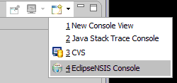
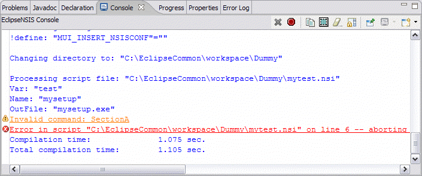

Console
The EclipseNSIS console shows the output of an NSIS script compilation process. The console shows three different kinds of output:
- Information
- Warnings
- Errors
The font and colors for the
console can be customized on the Colors
& Fonts
preferences page.
By default, the console is opened automatically, if it is not already
open, and made visible whenever a script is compiled. This behavior can
also be modified on the EclipseNSIS
preferences page.
Alternately, the EclipseNSIS console can be opened manually from within the standard Eclipse console view by selecting it from the dropdown menu, as shown below.

If errors or
warnings are detected, problem markers are created in the NSIS script
file with information about these problems. These problem markers can
be viewed either in the EclipseNSIS editor or in the standard Eclipse Problems view.
Errors and warning are also marked as hyperlinks in the
console. Clicking on a hyperlink will take you to the line associated
with the error or warning. If the MakeNSIS compiler does not provide a
line number for the error or warning, the problem marker is assigned to
the first line of the script file.
For detailed help about the console, click on the appropriate part of
the console screenshot.

- Output
- The output from the MakeNSIS compilation process.
- Error
- An example error message. Clicking on it will highlight the relevant line in the EclipseNSIS editor.
- Warning
- An example warning message. Clicking on it will highlight the relevant line in the EclipseNSIS editor.
- Close Console
- Closes the EclipseNSIS console.
- Cancel Compilation
- Cancels NSIS script compilation. This button is enabled only during compilation.
- Copy
- Copy the selected lines from the console. This button is enabled only when some lines are selected.
- Select All
- Select all the lines in the console.
- Clear
- Clear the console of all output. This button is enabled only when the console contains some output and is disabled during compilation.
- Scroll Lock
- Toggles the Scroll Lock.
- Pin Console
- Forces the Console view to remain on top of other views in the window area.
- Display Selected Console
- Select a console to display from a list, if multiple consoles are open.
Previous | Contents | Next
Copyright © 2004-2010 Sunil Kamath (IcemanK).